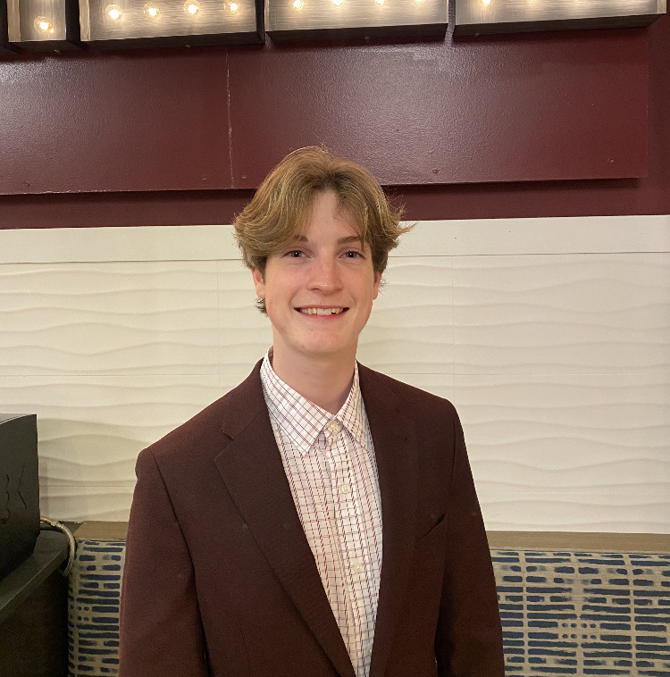

About |
I am a junior computer science student at Texas A&M University from Plano, TX. I currently hold a 3.78 GPA, serve on our chapter of Engineers Without Borders, and play a variety of intramural sports. I have cultivated a diverse skill set encompassing programming languages such as C, C++, Python, Java, JavaScript, R, and Haskell. Along with these skills I have developed an adept ability to solve difficult problems, optimize already correct solutions, and integrate user functionality.
 |